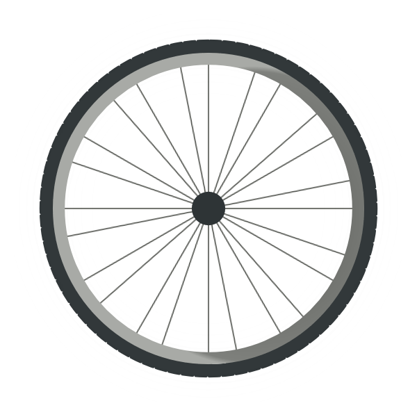

Houston Bike Trails

Our Mission
Houston is the fourth largest city in the nation and is still continuing to grow. One
might think that this means that there are no places to mountain bike in Houston, but this is definitely
wrong. If you look closer, Houston has many trails: by Buffalo Bayou, in Memorial Park,
and more. Biking is really important to people, especially people who live in Houston,
who do not get easy access to the outdoors.
This sport can help people stay healthy,
which in turn improves their quality of life. Having opportunities to be outdoors and
to enjoy trails makes Houston a better place to live.
I have created this website to
give information to people on some of the best bike trails in Houston. I encourage
you to go out and ride!